2026年11月26日 公開
キックは、足首の力を抜くほど速くなる？
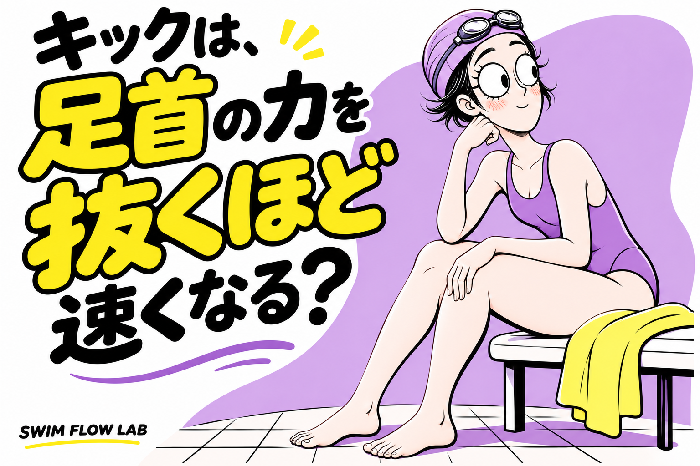
「つま先を伸ばして」「足首の力は抜いて」。キックの練習で両方を言われると、迷いませんか。つま先を伸ばした形を守ろうとすると力が入り、緩めようとすると脚の動きまで小さくなる。「結局、力を入れるの？ 抜くの？」という疑問が残ります。
この記事では、その助言に戸惑う架空の泳者・美咲さんと考えます。研究参加者の実話ではなく、説明のための場面です。美咲さんはクロールのキックで、足先の形を崩さないよう頑張っています。でも、それが「動かしにくい足首」なのか、「必要な形を保っている足首」なのかは、自分でも分かりません。
先に答えの方向を示すと、「力を抜くほど速くなる」という一方向のルールは、今回読む研究からは導けません。一方で、足首が動ける範囲や、泳いでいる時に足が向く方向は、無視してよいものではありません。そこで「力を抜く量」を探す前に、何を変えたいのかをほどいていきます。
「柔らかい足首」は、何が柔らかい？
まず、美咲さんの足首を三つの見方に分けてみます。座ってつま先を伸ばした時、どこまで動かせるか。泳いでいる途中で、足がどちらを向いているか。そして、その間に筋肉がいつ働いているか。この三つは、同じことを言い換えているわけではありません。
椅子に座って、足の指を丸めずに、足の甲ごとすねから遠ざけてみる。この方向が底屈（ていくつ）です。反対に足の甲をすねへ近づけるのが背屈（はいくつ）。自分の筋肉で動かせる範囲を「能動可動域」、外から支えて動かしたときの範囲を「受動可動域」と呼びます。調べる方向や測り方が違えば、「柔らかい」の中身も変わります。
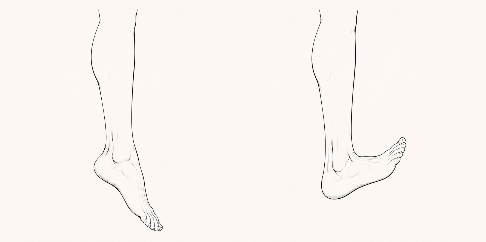
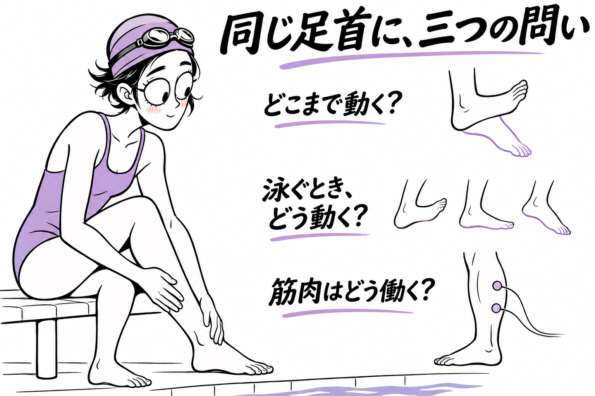
つま先を伸ばしたり、すね側へ起こしたりできる範囲を可動域といいます。これに対して、泳ぎの映像で見えるのは、その範囲の中で実際に足がどう動いたかです。よく動かせる足首でも、泳いでいる間は同じ形に保っているかもしれません。
さらに、足の向きが同じ二人を見ても、筋肉の働き方まで同じとは限りません。「ぎゅっとしている」という本人の感覚も、映像とは別の情報です。「形が動かない」「力んで感じる」「筋肉が活動している」を、一つの意味にまとめないことが最初の整理になります。
美咲さんが知りたいのは、足首の専門用語そのものではありません。今の頑張り方を変える必要があるかどうかです。その手掛かりとして、まず一つ目の問いから調べます。足首を動かせる範囲を狭くしたり広くしたりすると、進む速さは変わるのでしょうか。
階段、ジャンプ、水中。同じ足首をどう使う？
美咲さんがプールの階段を下りるところから考えましょう。段に足を置き、足裏が接地したまますねが前へ進むと、すねと足の甲の間が狭くなります。これが背屈です。見た目には足が動かなくても、すねが動けば足首の角度は変わります。成人12人の平地と階段の移行を調べた研究でも、下りに移る場面で身体を下ろす際の足首の背屈が示されています。［陸1］
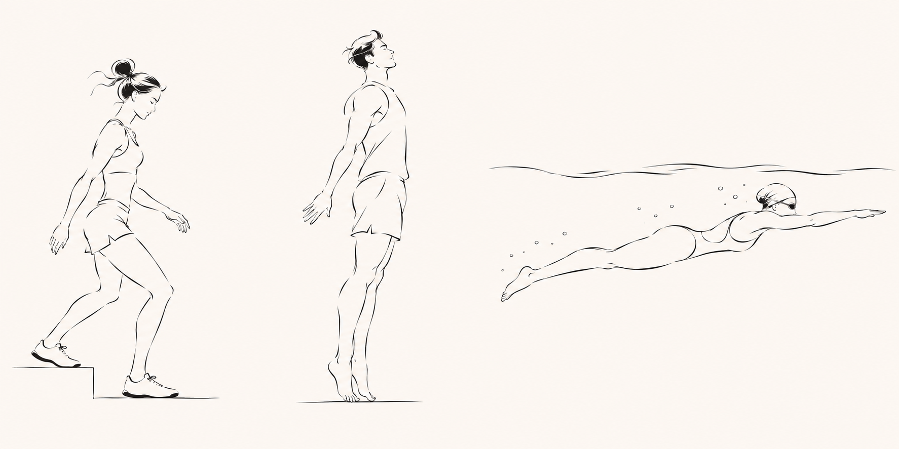
ジャンプで床を押し、かかとが上がるときは、足首が反対の底屈へ動きます。しゃがんだ姿勢から跳ぶ成人8人を調べた実験では、専用の靴で底屈を強く制限すると足首まわりの仕事量と最大パワーが大きく減りました。ここで測ったのは地面を押して跳ぶ動きです。つま先が伸びた外見だけから、足首をゆるめているかは分かりません。［陸2］
では、相手がボールならどうでしょう。男子大学サッカー選手11人が最大のインステップキックを行った研究では、テープで底屈を0°または15°に制限した条件でボールの速度が下がり、30°条件では制限なしとの差が確認されませんでした。研究が比べたのはボールの速さです。この角度を、泳ぎの目標にする根拠はありません。［陸3］
階段では体を下ろし、ジャンプでは床を押し、サッカーでは足の甲でボールを蹴る。足首の役目は、何に触れるか、何をしたいかで変わります。水中で壁を離れた美咲さんの足には、固定した床がありません。ここからは水を相手にしたキックに絞り、足首を動かせる範囲を変えると、本人が進む速さはどうなるかを見ていきます。
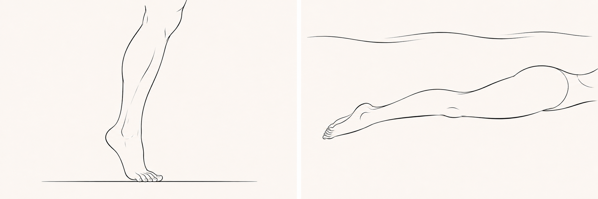
狭めると遅い。では、広げるほど速い？
この問いを、同じ人の条件を変えて比べた実験があります。KuhnとLegerlotzは、泳ぎに習熟した男女各5人、計10人に、水中ドルフィンキックをしてもらいました。平均年齢は22歳、練習歴は約16年。クロールの初心者を調べた実験ではありません。［1］
比べたのは、通常の状態、テープでつま先を伸ばせる範囲を狭めた状態、ストレッチでその範囲を広げた状態です。蹴る回数が増えたから速くなった、という違いを減らすため、キックの頻度は各人の最大頻度の80%に揃えました。全員が同じ回数、同じ力で蹴ったという意味ではありません。
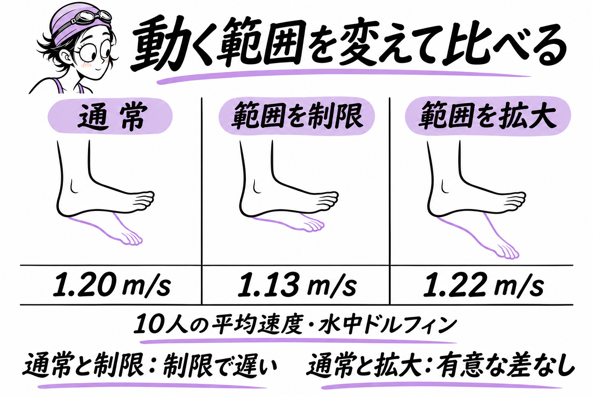
図のm/sは「1秒に進む距離」です。平均は通常1.20m/s、制限1.13m/s、拡大1.22m/sでした。ここには、二つの比較があります。
通常と制限を比べると、制限したほうが遅い差が確認されました。この条件では、つま先を伸ばせる範囲を狭めたことが、進む速さに不利に働いたと読めます。ところが、通常と拡大の間には、統計的に有意な速度差は確認されませんでした。
「でも1.22なら、1.20より速いのでは？」と思うかもしれません。平均値に差があることと、その条件変更で速くなったと判断できることは別です。この実験では、通常より広げることの速度向上を、確かな差として示せませんでした。誰にも効果がないと証明したわけではありませんが、数字の大小だけで「もっと伸ばせば、もっと速い」とは言えないのです。
美咲さんに戻ると、ここで得たのは「動く余地を狭めても同じように泳げるとは限らない。ただし、広げ続けるほど得になるとは、この実験からは言えない」という見方です。「足首を固めているように見える」を、すぐ柔軟性不足と決める理由にはなりません。この研究はテープとストレッチによる短期の比較で、「意識して力を抜く」という助言を試してはいないからです。
もう一つ、足首にテープを巻いた大学泳者17人の実験では、平均速度は通常の1.33m/sから1.26m/sへ下がりましたが、水中映像で測った足首の角度は小さくなりませんでした。テープが足部の回り方などにも影響した可能性があり、遅くなった理由を一つの角度では説明できません。美咲さんが見るなら、止まって足を伸ばした角度に加え、蹴る途中で足の向きがどう変わるかも手がかりになります。［水2］
では、動ける範囲を残すためには、筋肉をなるべく働かせないほうがよいのでしょうか。次は、足の角度から、泳いでいる間の筋肉の働きへ視点を移します。
筋肉が働くことと、悪い力みは同じ？
美咲さんは「力を抜いて」を、脚全体の頑張りを弱める意味に受け取っていました。でも、助言をした人が、筋肉を休ませ続けることまで求めていたとは限りません。この違いを考える手掛かりが、泳いでいる時の筋電図です。筋電図は筋肉の電気的な活動を調べる方法で、本人の「楽だ」「力む」という感覚を直接測るものではありません。
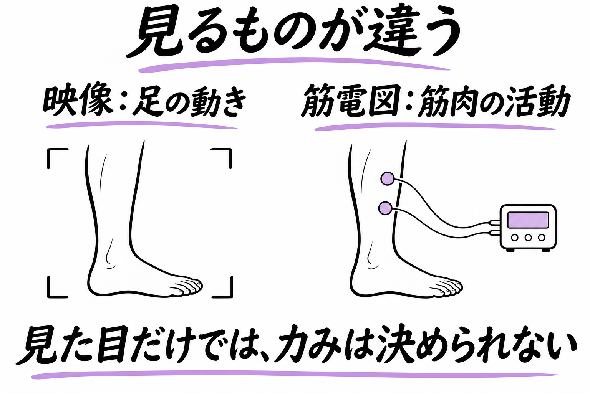
小林らは、全国大会級の女性泳者9人、平均20.7歳が、15mを全力で水中ドルフィンキックする時の映像と、6か所の筋肉の活動を調べました。すね側の前脛骨筋と、ふくらはぎ側の腓腹筋には、同じ時間帯に活動すると判定された場面がありました。［2］
つまり、競技レベルの高い泳者でも、足首まわりの筋肉は「片方が働いたら、もう片方は必ず休む」とは限りません。筋肉が働いているというだけで、動きを邪魔する力みだとは判定できないのです。逆に、動きがなめらかに見えても、筋肉が休んでいると決めることはできません。
同時に働く時間は、どのくらい？
研究で活動と判定した時間が重なる割合は、キック一周期の平均45.5%でした。これは「力みが45.5%」「力の45.5%を使った」という意味ではありません。活動判定には周期内のピークの30%以上という基準があり、基準未満を活動ゼロとみなすこともできません。この数字は目指す脱力率ではありません。
前の実験と合わせると、二つの話がつながります。足首が動ける範囲は速さに関係する場合がある。一方、その範囲を使う泳ぎの中でも筋肉は働いている。だから、「動ける足首にしたい」を「筋肉を働かせない足首にしたい」へ置き換えると、説明がずれてしまいます。
美咲さんに必要なのは、筋肉が働くたびに「力を入れすぎた」と心配することではなさそうです。ただ、この研究も、本人の力み感や、脱力の声かけで速くなったかを調べてはいません。今分かったのは、活動の有無だけでは良い悪いを決められないということ。ここで、よく使われる「魚の尾ひれのように」という例えを、足先の動きを考える手掛かりにしてみます。
魚の尾ひれから、キックを考える
「魚の尾ひれのように」は、何をイメージする言葉？
ここで、美咲さんが「魚の尾ひれのように蹴ってみよう」と言われた場面を考えます。魚の尾ひれを思い浮かべると、先ほどの「力を抜いて」より動きが浮かぶかもしれません。けれど、尾ひれのどこをまねるのでしょう。ふにゃふにゃした柔らかさでしょうか。それとも、体から先へ続く動きでしょうか。
この例えを役立てるには、魚がどう進むかを一度きちんと考える必要があります。魚は人の足首の正解を教えてくれる実験対象ではありません。それでも、「先端を動かすこと」と「先端の形を固め続けること」の違いを考える手掛かりになります。
尾ひれは横に動く。それなのに、なぜ前へ進む？
体と尾ひれで進む多くの魚では、左右の筋肉の働きによって体が曲がり、その曲がりが尾の方向へ伝わります。尾だけが体から独立して勝手に動いているわけではありません。体の動きに続いて尾ひれが水を動かし、水から力を受けます。胸びれなどを主に使う魚もいるので、ここでは体と尾ひれによる泳ぎに話を絞ります。［6］

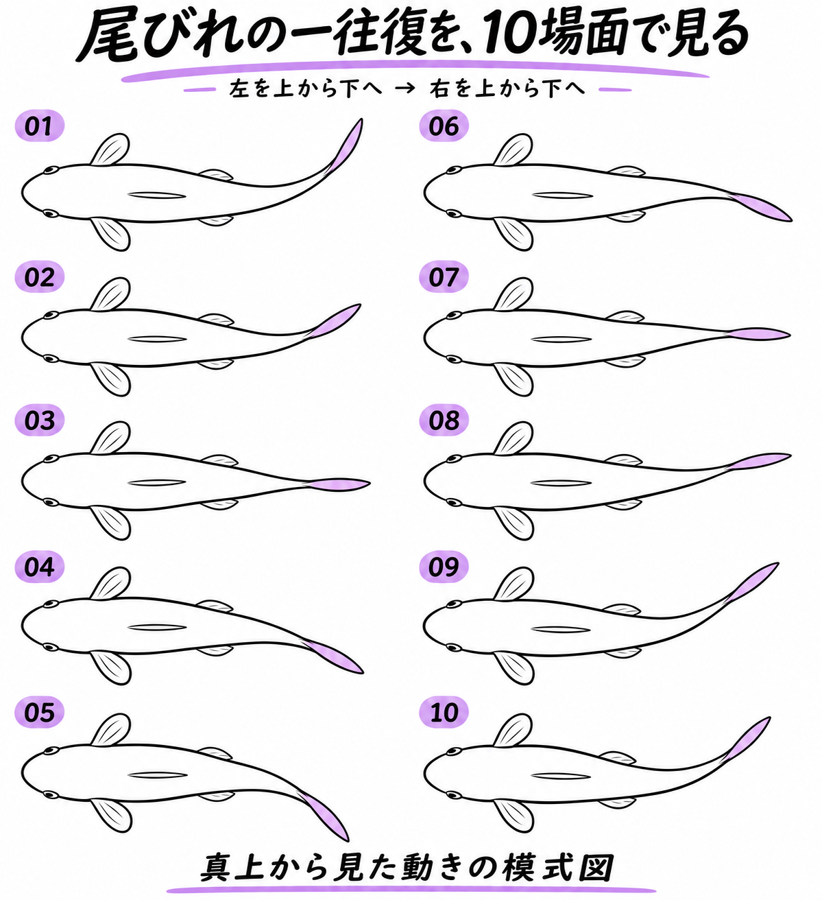
上から魚を見たつもりになってください。尾ひれは右へ、次に左へ動いています。「横へ水を押したら、魚も横へ動くのでは？」という疑問が残ります。
そこで見るのが、尾ひれの動く向きだけでなく、水に対する尾ひれの角度です。前へ進んでいる魚の尾ひれには、前進に伴う流れと、尾ひれ自身が横へ動くことで生じる流れが合わさって当たります。その流れに対して尾ひれがどちらを向くかによって、受ける力の向きも変わります。
振動する翼として尾ひれを考える大学の解説では、こうして受ける力の一部が前向きに働くことを示しています。尾ひれが折り返す時には、向きも切り替わります。横へ振る動きと、向きを変える動きが組み合わさるため、前へ進む力を生み出せるのです。水全体の側から見ると、後ろ向きに運動量を与え、その反作用を受けると説明できます。つまり、周りの水を全体として後ろへ動かす働きが、魚を前へ進ませます。実際の流れには渦や時間的な変化があり、すべての瞬間に力が真っすぐ前へ働くという意味ではありません。［7］
ここまでで、「尾ひれのように」の中身が一つ具体的になりました。ただ先端を振るのではなく、動きと向きが組み合わさって水と力をやり取りする。だから尾ひれを、力を失ってぶら下がる布のようにイメージすると、大事な働きが抜けてしまいます。
魚にも違いがある。ただし、名前だけで泳ぎを決めつけない
魚の泳ぎは、従来、体の広い範囲をうねらせる「ウナギ型」、尾側の動きが目立つ「マグロ型」などに分類されてきました。しかし、Di Santoらは魚類43種とナメクジウオ1種、合わせて44種の定常的な泳ぎを比較し、151本の映像系列から体の中心線の動きを分析しました。従来の分類ほど動きがくっきり分かれるわけではなく、共通する特徴と連続的な違いが見られました。［8］
これは「どの魚も全く同じ泳ぎ」という意味ではありません。体の形や分類名を見ただけで、実際にどう動くかまで決めない、ということです。この研究が比べたのは動作の特徴で、人の脱力の効果や、最も速くなる足首の使い方ではありません。
では、美咲さんの足首へ戻すと？
美咲さんは、つま先を伸ばした形を守ろうとして、足首までぎゅっと固めようとしていました。ここで尾ひれの例えを使うなら、「魚のように足首を左右へ振る」ではありません。魚の尾と人の脚は構造が違い、クロールのキックは主に上下方向です。
伝えたいイメージは、例えばこうです。「脚を動かした時、足先まで一枚の板のように固めて運ぶのではなく、動きに合わせて足先の向きも変わる。魚の尾ひれのように、水を受けながら動きがつながる感じ」。これは動きを想像するための指導表現で、この声かけによって速くなると実証したものではありません。水任せに足首をぐらぐらさせる指示でもありません。
ここで、人の研究と魚の例えがつながります。人の実験では、足首の動ける範囲を制限すると遅くなる場合がありました。一方、熟練泳者もキック中に筋肉を働かせていました。魚の説明からは、動きと向きの組み合わせで水と力をやり取りする見方を借りられます。三つを合わせて考えると、「固めない」を「何も働かせない」と受け取る必要はないと分かります。ただし、魚の動きから人に必要な筋活動の量まで決めることはできません。
美咲さんの問いは、「もっと力を抜けたか」から「形を守ることに集中しすぎて、動きに伴う足先の変化まで止めようとしていなかったか」へ変わります。これが、尾ひれの例えから持ち帰る観察の視点です。では、その足先の向きは、どの泳法でも同じでしょうか。次は泳法と場面を分けて考えます。
足の向きは、泳法と場面で変わる
ここまでの中心は、両脚をそろえて動かす水中ドルフィンでした。その結果を、そのまま「四泳法とも足首はこうする」と広げることはできません。分かりやすい例が平泳ぎです。クロールで聞いた「つま先を伸ばして」を、平泳ぎでも最初から最後まで守ったらどうなるでしょう。
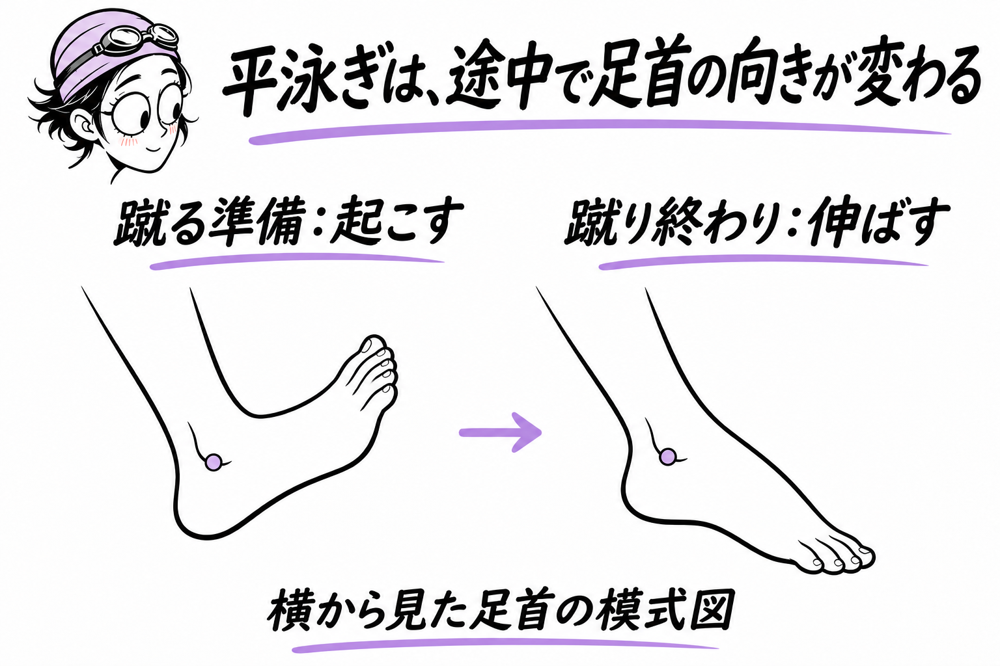
Masters Swimming NSWの指導資料では、蹴る準備で足首を起こして足の向きを整え、蹴り終わりには両足をそろえて伸ばす流れを説明しています。同じ一回のキックの中でも、足首に求める形が変わるのです。これは指導の説明で、脱力の効果を測った実験ではありません。［4］
平泳ぎの筋活動を調べたOlstadらの研究も、「いつ働くか」を考える材料になります。世界級4人と国内級4人が25mを全力で泳いだ時、世界王者2人では、すね側とふくらはぎ側の筋肉に同時活動が判定されませんでした。これは二つの筋肉が働く時間の重なりについての所見で、どちらの筋肉も働いていなかったという意味ではありません。［3］
ドルフィンでは重なりがあり、平泳ぎの王者ではなかった。どちらが正しいのか、という勝ち負けはつけられません。泳法も対象者も違い、活動を判定する基準も異なるからです。二つの研究から持ち帰りたいのは、「全員、いつでも同じように緩める」という一つの答えにまとめないことです。
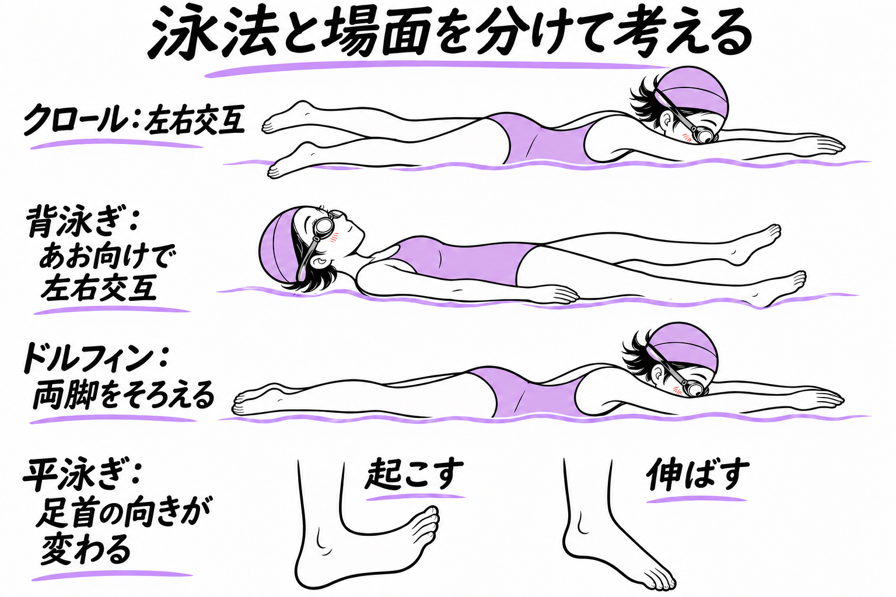
クロール・背泳ぎ・バタフライの指導では？
USMSのクロール解説は、足首を楽にする助言を、つま先を伸ばすこと、体幹や股関節から動かすことと組み合わせています。脚全体を止める説明ではありません。背泳ぎのガイドは、水面へ向かう局面と水底へ向かう局面を分けます。バタフライの解説も、体幹・股関節、自然な膝の曲がり、足首へ続く動きを扱っています。いずれも「脱力すれば何秒速い」と測った研究ではなく、動きを伝えるための指導資料です。［5］
美咲さんがクロールを練習しているなら、平泳ぎと同じように足を起こすことを、そのまま次の課題にするわけではありません。まず泳法を決め、その中のどの場面の足を変えたいのかを決める。そこが分かって初めて、「力を抜いて」という言葉を、自分の泳ぎへ戻せます。
次の一本では、何を確かめる？
美咲さんの疑問は、最初は「力を入れるか、抜くか」の二択でした。ここまで読むと、先に確かめることが見えてきます。「私の足首が固い」とは、どこまで動けるかの話なのか。それとも、泳ぐ間の形を変えにくいという話なのか。
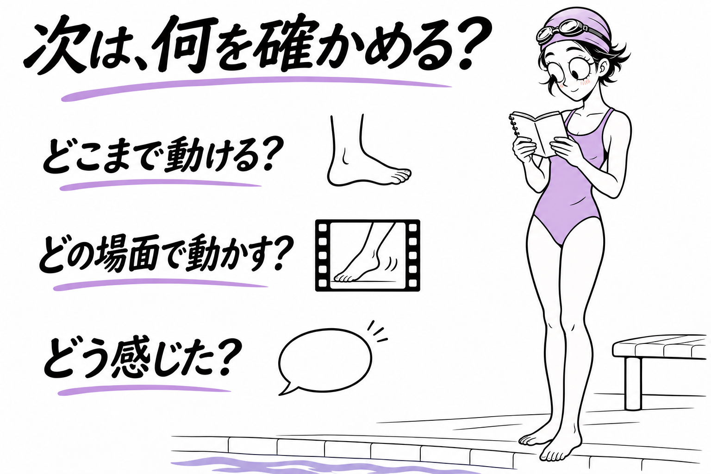
次の練習で試すなら、普段どおり泳げる環境で、まず慣れたクロールの短い一本を使います。距離や速さを増やすのではなく、「つま先の形をずっと守ろうとしていたか」「その時に足首を窮屈に感じたか」を思い返します。これは本稿の観察案で、研究で効果が確かめられた練習処方ではありません。
形を守ろうとして窮屈だったなら、次は脚全体の動きを弱めるのでなく、足先の形を守り続けようとする意識だけを弱め、いつもの楽な泳ぎと比べる、という選び方があります。楽になったかと、泳ぎが進みやすく感じたかは分けて確かめます。楽でも進みにくく感じるなら、「脱力できたから成功」とは決めず、いったん普段の泳ぎに戻します。
一方、もともと窮屈さがなく、足も動いているなら、この研究を理由にさらに力を抜く必要があるとは言えません。動かせる範囲の問題か、動かし方の問題か分からない時に、無理に足首を伸ばすことも、この実験の再現にはなりません。痛みのある動きを試す課題にはしないでください。
ここで変わるのは、観察の順番です。最初から「力を抜けば速いはず」と結果を決めず、どの泳ぎの、どの場面で、何を変えたかを先にそろえる。本人の感じ方が変わったことと、タイムが変わったことも分けます。これは「良い姿勢とは？」で扱う、見た目の形・感じ方・動作の結果を分ける考え方にもつながります。
「強く蹴って」と「足首の力を抜いて」は、言葉だけなら反対です。でも、一方が脚を動かすことを、もう一方が足先の形を固めて守り続けないことを指すなら、両立する余地があります。尾ひれの例えも、力をゼロにするためではなく、動きに伴って先端の向きが変わることを思い浮かべる手掛かりでした。美咲さんが持ち帰るのは、もっと脱力するという宿題ではありません。何を動かし、何を保とうとしているのかを、自分の泳ぎの中で区別する問いです。